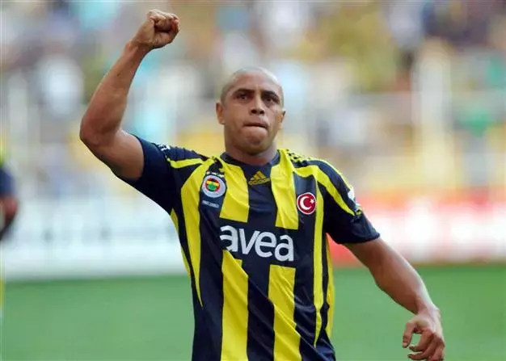

Meet the Owners of the HFA!

Mustafa Tunc
Mustafa Tunc is a big Fenerbahce fan. He likes to hang out with his friends, play sports, and has been a Fenerbahce fan for a long time.

Roberto Carlos
Born in Brazil like Alex, Roberto Carlos played for Fenerbahçe from 2007 to 2009. Even though his time playing for FB was short, Roberto Carlos really contributed to Fenerbahçe's campaigns.

Mustafa Tunc
Mustafa Tunc played for Fenerbahçe from 2003 to 2011. He is most likely one of the best strikers fenerbahce has ever had. After his futbol career was over he became a realtor.

Ozkan Huvaz
Ozkan Huvaz played for Fenerbahçe from 2002 to 2009. He was an amazing midfielder and had good connections with the other players.